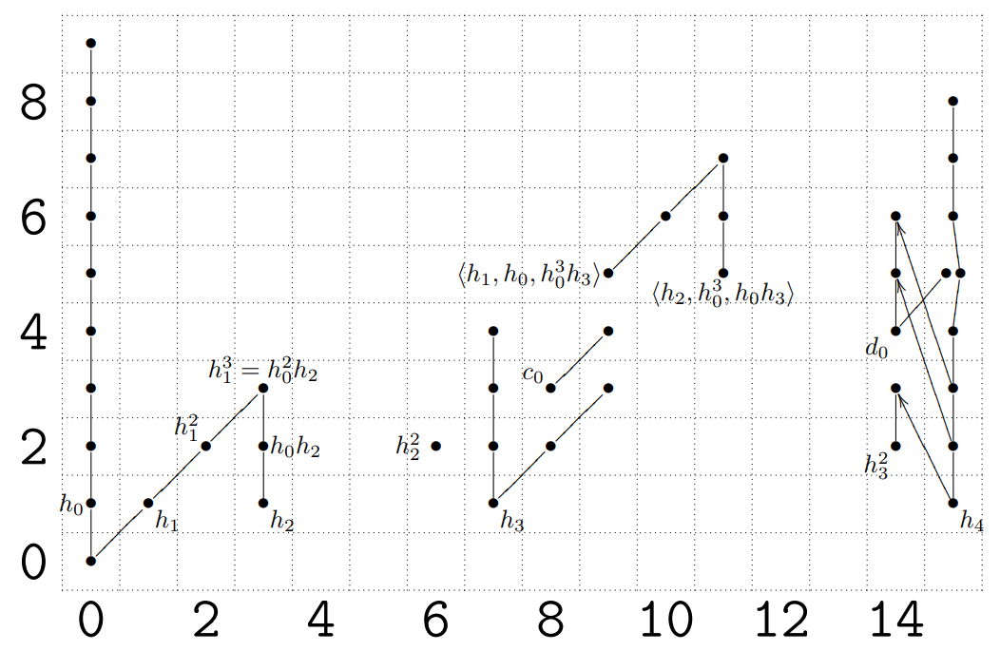

Families
in the Stable Stem

In Fall 2018, the homotopy theory learning seminar is on families of elements in the stable homotopy groups of
the spheres, following Ravenel's green book [Rav86]. This seminar is organized by Arun Debray and Richard Wong.
Schedule:
- Planning meeting and overview
- Richard, September 5
- Introduction to spectra
- Rok, September 10
- Spectral sequences: construction and use
- Ricky and Arun, September 17
- The Adams and Adams-Novikov spectral sequences
- Riccardo, Alberto, and Richard, September 24, October 1, and October 8
[Rav86] §§2.2, 4.4
- Construction of BP and MU
- Ty, October 15
- Calculations with the Adams-Novikov spectral sequence
- TBD, October 22 and October 29
[Rav86] Ch. 5
(Further talks TBD)
Main references:
- [Rav86]
- Douglas C. Ravenel, Complex Cobordism and Stable
Homotopy Groups of Spheres.
Related links:
- [BC18]
- Agnès Beaudry and Jonathan Campbell, “A Guide for Computing
Stable Homotopy Groups.”
- [Rog12]
- John Rognes, “The Adams spectral
sequence.”